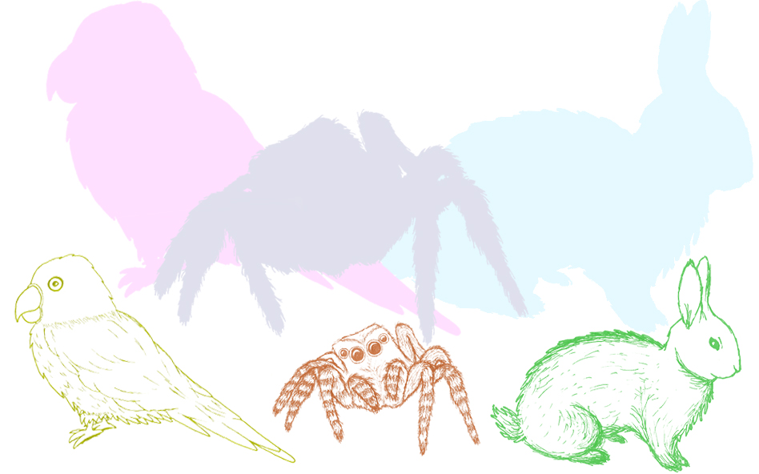
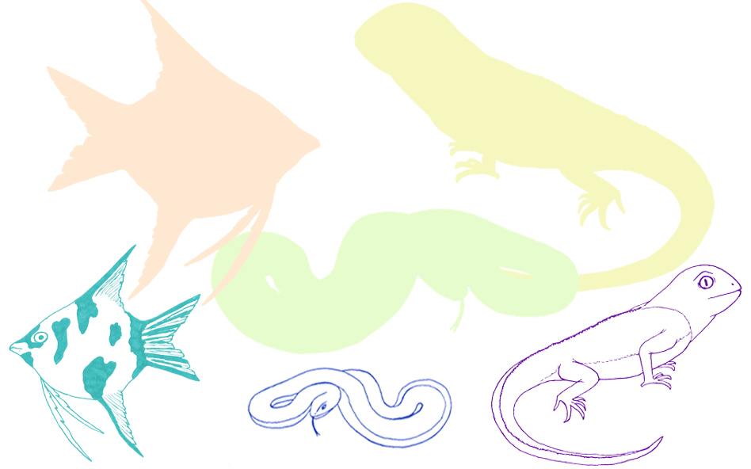
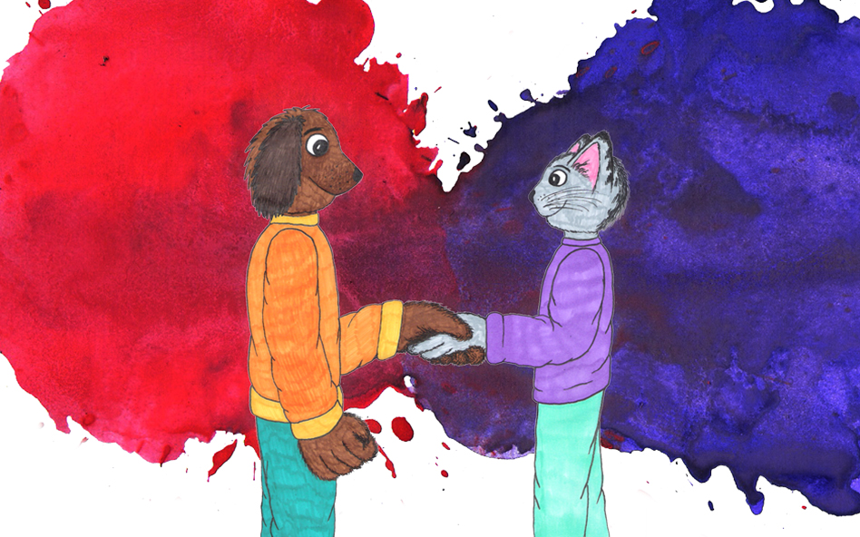

BLUE or RED? CAT vs. DOG?
Why just blue or red? Why people call themselves either a cat or a dog person? Why not both or some completely different? When there are so many other animals and colours in the world.
In colour theory, blue and red are not opposite colours, rather orange is the opposite of blue and green is the opposite of red. That is logical, because the main colours are blue, red and yellow. So, you can think the opposite of blue is everything but blue. That leads you to think that mixing both red and yellow is the real opposite of blue, and that is orange. The same goes for the other main colours, red and yellow, as well.
"Why is yellow so often left outside?"
Why is yellow so often left completely outside the "blue or red" thinking? It surely is just as much a main colour as blue and red. Why should we think of only the main colours to begin with? What narrows our thoughts about the colours? We all know there are so many colours we can see. Also, why is blue traditionally seen as a men's colour and red as women's? Typically, boys' and girls' (and quite often men's and women's) clothes and things are blue and red, and always so that blue is for boys and red for girls. Why so? Even if it is because of tradition, does it have to stay that way?
Why do we call ourselves just dog or cat people? Like why not a parrot person instead? Of course, it is a fact that the most common pets in the world are cats and dogs and humans have a long history with them. So, it is quite logical that we would generally think of these animals more than others. But still why do we set cats and dogs so often against each other. Why would you have to be only a cat person or a dog person? Why not both? It may be a fact that sometimes cats and dogs just do not like each other very much and it can be tricky having them both in the same place at the same time. But many of us also know how well cats and dogs can get along and behave themselves. Even if they might not always be best friends, they are no more archenemies or rivals to each other than they would be to any other animals. How often do two cats start fighting with each other? Or dogs? I know I have seen quite a bunch of those cases with our own pets.
"Why should we stick in this box thinking?"
What about all the internet videos and pictures of both cats and dogs? There are so many videos and images showing us how cats and dogs can also coexist in harmony. Also, how often are cats and dogs seen fighting or getting along fine with different animals as well? And really, why should we stick in this box thinking about just these two animals? Why not think and talk more about all the other pets that some of us have: parrots, rabbits, snakes, spiders, fish, lizards and so on. It can get even more interesting thinking about all the world's animals, including the wild ones. Or maybe you just do not care for any animals that much? That should be acceptable also.
Or are these divisions even relevant today? Is this all "blue or red" and "cats vs. dogs" just old-fashioned thinking already? Do people still think this way or not? To test this on a small scale I asked a few other people what they think of the matter:
Minna Herrala, an artist at Varikko Gallery
She thinks that it is hard to choose just from those pairs, but these types of settings are still quite typical. For example: when you tell that you have cats there is almost always that one person who immediately says that she/he is a dog person, or the other way around. She wondered that maybe sometimes these settings could go along with people's personalities and that introverts are more often cat people and extroverts more dog people. She thought that these pair settings are not needed or very reasonable. But for example, even though she herself likes both cats and dogs, still she could not have a dog because her life is not routined enough for that. Minna thinks that cats and dogs should not be categorised by humans. Also, cat and dog people could learn from each other and it would be nice if people got to know all the other animals better, as well as different types of people.
Niina Keltam�ki, another artist at Varikko Gallery
She said that it was quite easy to choose cat and red from the pairs, but she has both cat and dog in her family and she likes them both. Also, her favourite colour is purple. She neither thinks that these settings are needed but that maybe they might be innate in us. For example: the body language and overall behaviour is different with cats and dogs, and cats are more independent, and dogs usually need more company. And she said that if she had to choose it would always be clearly cat. She also hoped that there were less cat hatred and that people should always treat all animals well.
Student, SeAMK, culture producing
She also said that it is not nice to choose just between those options. She thinks that these settings are still quite common, and you can see them often in marketing. She mentioned how those settings are often related to people's traditional family structures and are sometimes even clich� and how blue and red do still show in men's and women's things. She thinks that she does not use those settings (or at least does not do it consciously) and that people should not think in black and white and should see all the colours.
University graduate, also studied at SeAMK
She could decide between the pairs but said also that for example red is much needed colour as well even though she would choose blue. She thinks that in a way the dichotomies are based on reality: Dogs and cats are such common pets, and most people have an opinion on them, and there are people who clearly understand one better than the other. Also, it can be fun to ask someone whether they are a cat person or a dog person, but it should not mean much one way or the other and people should perhaps better acknowledge other animals as well. But she would want to stop the gendering of colours, which she finds stupid and old-fashioned. In her opinion people should be able to like and wear whatever they like.
Maybe people's thoughts on these things do not fit so well into those boxes and not as often as they perhaps used to. Still in some cases and times people do think these types of questions. There are many videos online where people use blue and red as a sign for revealing a baby's gender. For example, people cut a cake and its inside is red if the baby is a girl and blue if it is a boy. Or balloons are released from some box and their colour is red or blue according to the baby's gender.
"The whole question is more laughable than serious and the answers really do not matter"
The popular Finnish YouTube channel Justimusfilms has made a video, "KOIRAT VS. KISSAT (Rap-Battle)" which touches upon the cat vs. dog attitude in a humoristic way. But because the video is made for fun and with humour, it also confirms how the whole question is more laughable than serious and the answers really do not matter.
Luckily there is quite a lot of variation of different types and cases. It is not all black and white. You can find blue for women and red for men but also vice versa and often many other colours as well. Most of us also remember many different animals and pets and can like or dislike many of them at the same time. It does not have to be just red or blue and cats or dogs. It can be that but can also be many different options.
